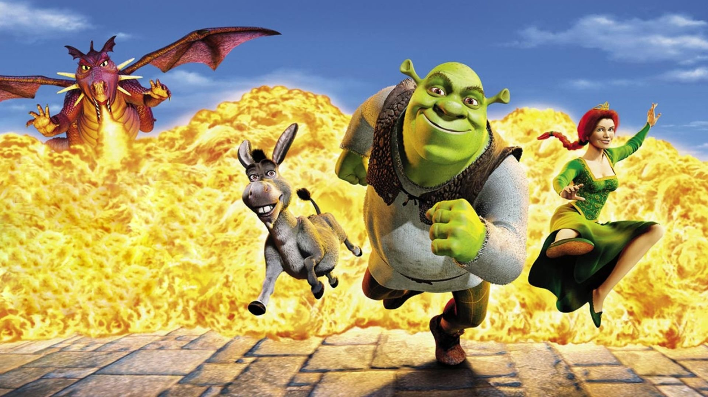
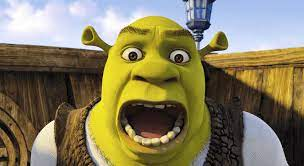
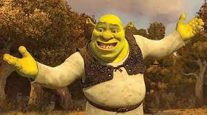

FilmTEB

Shrek
By odzyskać swój dom, brzydki ogr z gadatliwym osłem wyruszają uwolnić piękną księżniczkę.
Podstawowe informacje (nagłówek 3)
| Tytuł polski |
Shrek |
|
Tytuł angielski
|
Shrek
|
|
Rok produkcji
|
2001
|
| reżyseria |
Andrew Adamson |
| Vicky Jenson |
| Scenariusz |
William Steig |
| Ted Elliott |
| Terry Rossio |
| Joe Stillman |
| Roger S.H. Schulman |
| Linki |
|
Opis fabuły
W bagnie żył olbrzym Shrek, którego cenna samotność została nagle zakłócona inwazją dokuczliwych postaci z
bajek. Ślepe myszki buszują w zapasach olbrzyma, zły wilk sypia w jego łóżku, a trzy świnki buszują po jego
samotni. Wszystkie te postaci zostały wypędzone ze swego królestwa przez złego Lorda Farquaada.
Zdecydowany ocalić ich dom - nie mówiąc już o swoim - Shrek porozumiewa się z Farquaadem i wyrusza na ratunek
pięknej księżniczce Fionie, która ma zostać żoną Lorda. W misji towarzyszy mu przemądrzały Osioł, który zrobi
dla Shreka wszystko z wyjątkiem... przestania mielenia ozorem. Ocalenie księżniczki przed ziejącym ogniem
smokiem okazuje się być najmniejszym problemem przyjaciół, kiedy to zostaje odkryty głęboko skrywany, mroczny
sekret Fiony.
Role w filmie
|
Role w filmie
|
|
Shrek
|
Mike Myers
|
|
Donkey
|
Eddie Murphy
|
|
Princess Fiona
|
Cameron Diaz
|
|
Lord Farquaad
|
John Lithgow
|
Fotosy
| Fotosy z filmu (min. 3) |

|

|

|